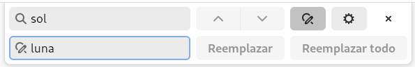
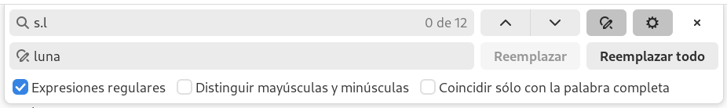

Expresiones regulares
Cuando realizamos búsquedas o búsquedas/reemplazamientos, escribimos el texto que deseamos encontrar en el cuadro de búsqueda:

Reemplazo la palabra "sol" por la palabra "luna"
Casi todos los editores de texto admiten expresiones regulares que no es otra cosa que utilizar ciertos caracteres especiales, a modo de comodín, para representar cierto conjunto de caracteres.
Dos ejemplos:
Reemplazo las palabras "sol" y "sal" por la palabra "luna":
Reemplazo "sol", "sal", "sil" "sXl", "sZl", "s l", "s@l", "s-l", "s8l", "s#l", "s.l", ... por la palabra "luna": 
A todos estos caracteres que tienen un significado especial dentro de la expresión regular se los denomina metacaracteres.
Una expresión regular es un texto que utiliza metacaracteres para representar a múltiples textos.
Metacaracteres
Carácter comodín .
El punto . es un comodín que representa a un único carácter cualquiera. Por ejemplo c..a representaría a los
textos "casa", "cosa", "cesa", "cX@a", "c -a", "c..a", "ccaa", ...
lista [···]
El corchete [] representa a un único carácter de un conjunto, por ejemplo, cualquier vocal minúscula sería:
[aeiou].
Además con el acentro circunflejo ^ podemos negar la lista, así [^aeiou] sería cualquier cosa excepto las vocales minúsculas.
Y podemos usar rangos [a-z] sería una letra de la "a" a la "z", [0-9] un número del "0" al "9", y [a-zA-Z@] cualquier
letra mayúscula o minúscula y la arroba.
Los rangos suelen ser acorde al código ASCII, aunque en algunos editores podrían ser de acuerdo a la configuración LOCALE.
Carácter de escape \·
Para anular el significado especial de algún metacarácter debemos precederlo de la secuencia de escape \ :
c..a\.- equivale a: "casa.", "cosa.", "cesa.", "cX@a.", ...\[c.sa\]- equivale a: "[casa]", "[cosa]", "[cesa]", "[cX@a]", ...
Números \d
Otro metacarácter muy utilizado es el que representa a cualquier número: \d.
\d\d\d\d- Un número de cuatro cifras: 1978, 2023, es decir, cualquier número del 0000 al 9999día \d- día 0, día 1, día 2, ... día 9,
Repeticiones (cuantificadores) ·+, ·*, ?*, {n,m}
Con este metacarácter estamos indicando que el carácter precedente se está repitiendo un número determinado de veces:
\d{4}- Un número de cuatro cifras: 1978, 2023, es decir, cualquier número del 0000 al 9999\d{4,6}- Entre 4 y 6 dígitos seguidos: 1978, 19780, 197833\d{4,}- Números de 4 o más dígitosx\d?- Una x, opcionalmente seguida de un dígito: x, x3, x9, ...x\d*- Una x, opcionalmente seguida de 0 ó más dígitos: x, x3, x69, , x183, x000000,x\d+- Una x seguida de, al menos, un dígito: x7, x69, , x183, x000000, ...
Principio y final de línea ^···, ···$
Podemos especificar que un patrón se cumpla sólo al principio o al final de la línea.
Buscamos cierto texto al principio de cualquier línea:
^una- El texto una al principio de línea. Si hacemos búsqueda "case insensitive", también Una, UNA, ...^[aeiou]- Una vocal (minúscula) al principio de línea.^-- Un guión al principio de línea
o líneas que terminen con cierto texto:
Teruel.$- El texto Teruel. al final de una línea.[^aeiou]$- Cualquier carácter al final de línea que no sea vocal (minúscula).[^\.]$- el último carácter de una línea cuando no es un punto.
Alternancia ·|·
Al igual que podemos buscar un carácter de una lista (gat[oa]), podemos buscar
palabras en una lista:
rojo|verde|azul- cualquiera de estos tres coloresgat(o|a|ito|ita)- todas esas categorías de gatos
En este último ejemplo hemos utilizado paréntesis para crear un agrupamiento.
Agrupamientos (·) (·) (·)... -> \1 \2 \3...
Podemos seleccionar ciertas partes de una expresión regular agrupándolas entre paréntesis.
El texto contenido en esos agrupamientos, luego podrán ser usado en reemplazamientos,
donde cada agrupamiento se reconocerá como \1, \2, \3, ...
Ejemplos:
- buscar
([aeiou])-> reemplazar por:[\1]
encierra vocales entre corchetes -> [e]nc[i][e]rr[a] v[o]c[a]l[e]s [e]ntr[e] c[o]rch[e]t[e]s - buscar
gat(o|a|ito|ita)-> reemplazar por:lob\1\1\1
Un gato de gatwick engatusa a una gatita -> Un lobooo de gatwick engatusa a una lobitaitaita - buscar
(\d)(\d)-> reemplazar por:\2\1
El número 34 es 2 x 17 -> El número 43 es 2 x 71
10 números: 0123456789 -> 01 números: 1032547698 - buscar
(\d{2})(\d{3})(\d\d)(\d\d),-> reemplazar por:[Tfno: \1-\2.\3.\4]
625995366, 912585413, 962839500, -> [Tfno: 62-599.53.66] [Tfno: 91-258.54.13] [Tfno: 96-283.95-00]
clase Pattern para expresiones regulares de Java
expresiones regulares en javascript